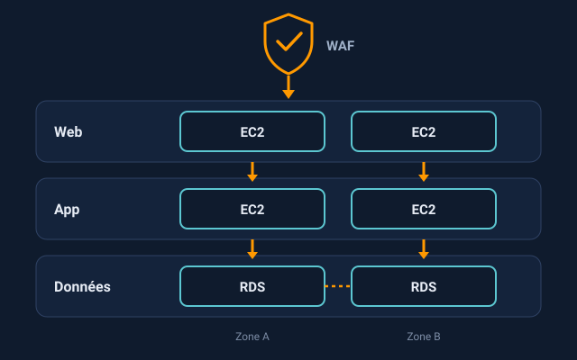
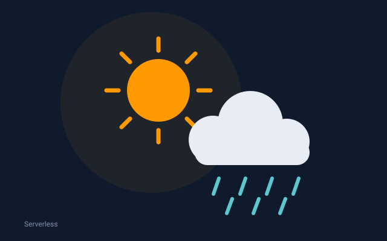
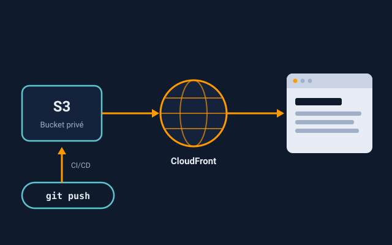

Projets
Trois réalisations, de l’infrastructure as code au serverless et au déploiement continu.
-

Projet 1
Déploiement d’une architecture à 3 niveaux avec Terraform
Une infrastructure web, applicative et données répartie sur deux zones de disponibilité, protégée par un WAF et entièrement décrite en code.
- Terraform
- VPC
- ALB
- WAF
- RDS
-

Projet 2
Mise en place d’une application météo serverless
Une application météo sans serveur à administrer, construite avec des services AWS serverless.
- Serverless
-

Projet 3
Déploiement d’un site web statique sur AWS avec CI/CD (S3 + CloudFront)
Un site web statique hébergé sur S3, diffusé par CloudFront en HTTPS et mis en ligne automatiquement par un pipeline CI/CD.
- S3
- CloudFront
- CI/CD
Certifications
Des compétences validées par AWS.
- AWS Certified Solutions Architect – AssociateAmazon Web ServicesVoir la certification
- AWS Certified Cloud PractitionerAmazon Web ServicesVoir la certification
À propos
Certifié AWS, je m’intéresse à la conception d’architectures cloud fiables et à l’automatisation de leur déploiement. NickTechs rassemble mes projets et la façon dont je les ai construits.